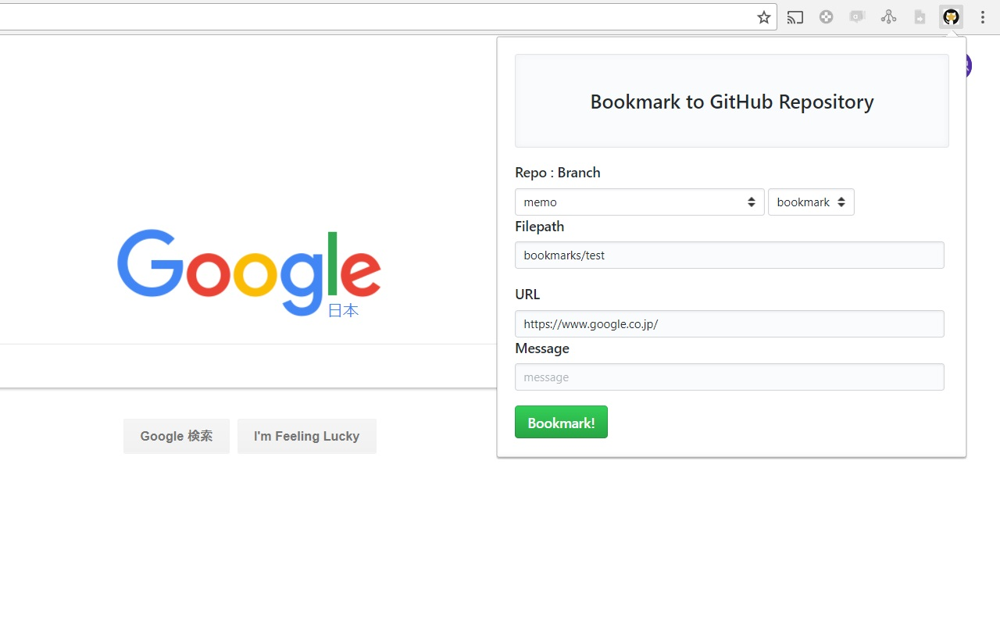
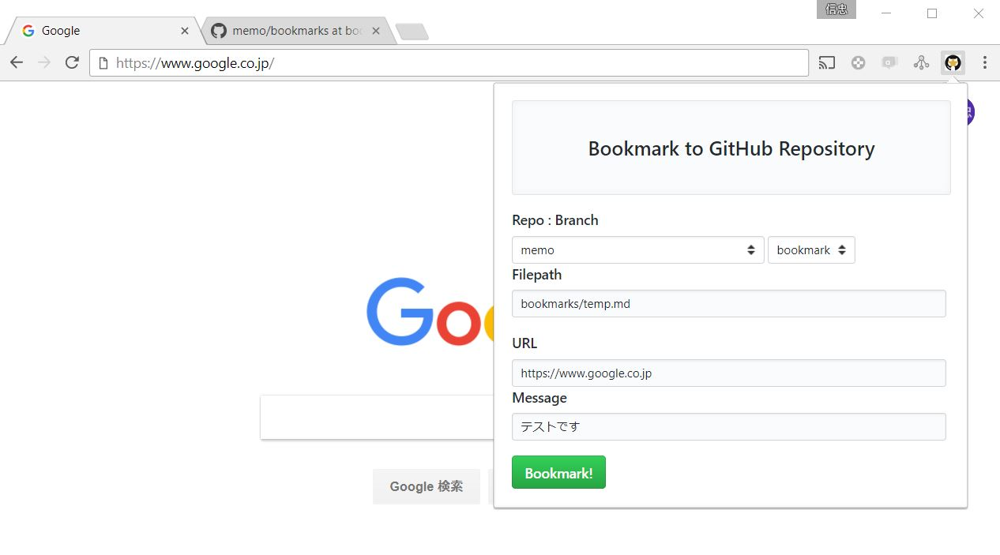
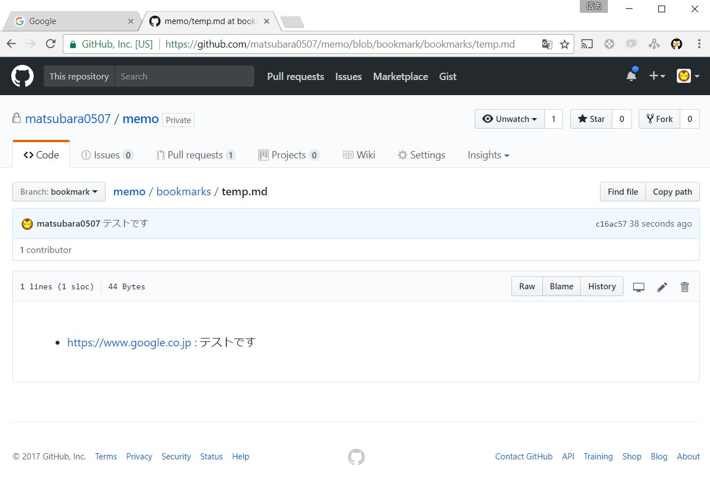

GitHub に Bookmark を送る Chrome 拡張を作ってみた
Chrome 拡張を作ってみた． どんなのを作ったかというと，ブックマークを GitHub のリポジトリのファイルに書き込んでいくやつ． ファイルを指定して，どんな時に参照してたかを分けたり，メッセージを残せたり．
残りの細かい作業(消したり，修正したり，検索したり)は GitHub 側で自由にやってくれって感じの拡張です．
なんか作業してるとタブがたまってしょうがない(あとで記事でも書こうかなと思うと尚更)のでずっと欲しかった． まぁ車輪の再発明の可能性あるけど，まぁいいや．
作った
こんな感じ．

一応公開してみたけど，バグは残ってそう． ごめんなさい．
見た目は Primer.css っていう GitHub 公式の CSS ツールキットを用いて寄せた． あとは，リポジトリとブランチを既存のを取ってきて選択できるようにした．
作る
要約すると GitHub API でプッシュするだけ． で，認証とかをどうするかというと，愛用してる GAS と GitHub をつなぐ Chrome 拡張がいい感じで MIT ライセンスなので，使わせてもらった． これをベースに以下のサイトを見ながら，読み解いて作っていった．
vs GitHub API
最初は，前作った日記 Bot を参考にしながら
- コミットしたいブランチの情報を取得(既存のブランチに紐づけないならいらない)
- blobオブジェクトを作成(ファイル単位のオブジェクト)
- treeオブジェクトを作成(ディレクトリ単位のオブジェクト)
- commitオブジェクトを作成(treeオブジェクトをコミットに紐づける)
- ブランチに紐づける
とかやってた． しかし，ちゃんと GitHub API を見てると，ファイルを直接送れる Contents API というのがあった． 早く気づきたかった…orz
ただ，ファイルの有無をチャックするのには tree オブジェクトの API を使って再帰的に探すようにした． get contents でもできるんだけど，1000ファイルを超えると使えなくなるらしいし，せっかくだから自作してしまった．
function existContents(filepath, pTree) {
var loop = (function (filepaths, index, pTree, resolve) {
var path = filepaths[index];
var result = {};
for (var i in pTree) {
if (pTree[i].path.toString() === path.toString()) {
if (i - 0 === filepaths.length - 1 && pTree[i].type.toString() === 'blob') {
result = pTree[i];
break;
} else if (pTree[i].type.toString() === 'tree') {
result = pTree[i];
break;
}
}
}
switch (result.type) {
case 'blob':
resolve({ ok: true, sha: pTree[i].sha });
break;
case 'tree':
$.ajax({
url: `${github.baseUrl}/repos/${github.user}/${github.repo}/git/trees/${pTree[i].sha}`,
headers : { Authorization: `token ${github.token}` }
}).done((tree) => {
loop(filepaths, index1, tree.tree, resolve);
}).fail(() => {
resolve({ ok: false });
});
break;
default:
resolve({ ok: false });
}
});
return new Promise((resolve) => {
loop(filepath.split('/'), 0, pTree, resolve);
});
}イロイロやってみた結果，loop という関数を使って，与えられたファイルパスを基にして再帰的に呼び出している．
vs Promise
上のコードを見るとあるように，Promise っていうオブジェクトを複製(生成)してる．
Javascript は外のリソース(API をたたくとか)とやり取りする場合は，Promise オブジェクトに処理を記述して，あとで実行し，返ってくるまで処理が止まるようにしているみたいだ(なんでこうなっているんだろう？)． これを，then メソッドで数珠つなぎみたいにしていく． こんな感じ．
initContext()
.then(initUserInfo)
.then(checkGitHubAPI)
.then(() => new Promise((resolve) => { github.repo = repository; resolve(); }))
.then(github.get(`repos/${github.user}/${github.repo}/branches/${branch}`))
.then(branch => {
if (!(context.name && context.email)) {
context.name = branch.commit.commit.author.name;
context.email = branch.commit.commit.author.email;
}
return github.get(`repos/${github.user}/${github.repo}/git/trees/${branch.commit.commit.tree.sha}`)();
})
.then(tree => existContents(filepath, tree.tree, repository))4つ目の () => new Promise((resolve) => { github.repo = repository; resolve(); }) にあるように，引数の resolve が次の then で与えるメソッドである．
なんかこういう構造は型クラスと相性よさそうだ．
値が返ってきてから実行したい処理は，ちゃんと Promise の中に入れないとうまく動作しない(このあたりにバグが潜んでそう…)． 今は愚直に数珠繋ぎしてるが，きっともっと賢い繋げ方がある気がする．
vs Debug
やり方わからないから自流でやった．
みたいのを書いておいて
みたいな感じでいわゆる printf デバッグをしてた． あとは，Developer Tools とかを見ると，エラーが出ていることも(構文的なモノとかはコッチのが多いかなぁ)． 動的言語は静的検査があればわかるバグもごちゃっになって出てくるのでつらいですね…
vs Primer.css
最後にサクッとデザイン変えて完成！っていう感じの軽い気持ちで手を出したら，思ったより時間かかった． というのも，Primer.css には Bootstrap みたいな Web 越しでリンクを貼れる公式のとこが見当たらなかった(ローカルに落とさなくても使える的な)． なので，ローカルにリポジトリを落として，ビルドする必要がある．
が，ぼくは Windows なので，ちとつらい． このためだけに node いれるのもだるかったので，Docker でビルドして持ってこようと考えた(どーせ css を生成するだけだろーし)．
しかし，ドキュメントにあるとおりに，クローンして npm run build とやったのに，Error: File to import not found or unreadable: primer-core/index.scss とでたり，primer-module-build が無いといわれたり，なかなかすんなりいかなかった．
最終的には，
docker run --rm -it -v /c/Users/username/tekitounatokoro:/mnt node /bin/bashって感じに適当なところを適当なとこにマウントし/rootでnpm install --save primer-module-buildしnpm install --save primer-cssして/root/node_modules以下にあるビルド済みprime-cssの中から生成された CSS ファイルを- マウント先にコピーして取ってきた
あとはこの Primer.css のドキュメントに従って，いい感じにデザインを変えていった．
vs Javascript
意外な挙動がいくつか．
日時のフォーマット
まず，日時のフォーマットをするメソッドが無かったので調べて作った． まぁこれは最終的には使ってないんだが(コミットするときに必要だった)．
function formatISO8601(date) {
var offset = (function (d) {
var o = d.getTimezoneOffset() / -60;
return ((0 < o) ? '+' : '-')('00'Math.abs(o)).substr(-2)':00';
})(date);
return [
[
date.getFullYear(),
('00'(date.getMonth()1)).substr(-2),
('00'date.getDate()).substr(-2)
].join('-'),
'T',
[
('00'date.getHours()).substr(-2),
('00'date.getMinutes()).substr(-2),
('00'date.getSeconds()).substr(-2)
].join(':'),
offset
].join('');
}this
GitHub API に関するのだけ外に出してたら
function GitHubAPI(baseUrl, user, repo, token) {
this.baseUrl = baseUrl;
this.user = user;
this.repo = repo;
this.token = token;
}
GitHubAPI.prototype.fetch = function(method, endpoint, data) {
return new Promise((resolve, reject) => {
var params = {
url: `${this.baseUrl}/${endpoint}`,
headers : { Authorization: `token ${this.token}` }
};
...
});
};
GitHubAPI.prototype.get = function (endpoint) {
return function() { return this.fetch('GET', endpoint, null); };
};こんな感じのコードで this に fetch がないと怒られた． ぜんぜん意味が分からなかったんだけど，調べてみたら．
メソッド呼び出しの中で関数呼び出しされているので、 あくまで注2の「this」はグローバルを指してしまいます。
えぇぇ，って感じだった． (メソッドではなく)関数の this はグローバルを指すんだってさ． まぁ確かに，関数を実行するのはオブジェクトでないしなぁ． で解決策は
「
this」を別の変数で持っておきます。この手法はよく使われます。 慣用的に変数は「self」, 「that」, 「_this」のどれかが使われる事が多いです。
なんか var _this = this とか何度か見たけど，そういう意味だったのね．
Primitive string 型と String クラス
JSHint 使ってリファクタリングしたら == を === にしろと言われた． 言われたとおりにしたら動かなくなった…
原因のひとつは Primitive の文字列型と文字列クラスを比較してたから． 'abc' とかみたいに値を書けば文字列型だが，API の返り値である JSON オブジェクトの文字列は文字列クラスになっている． なので，JSONオブジェクトだったほうを toString() して比較した．
for-in の挙動
Javascript の拡張 for 文として次のようなのがある
for-in なのに，要素(1,2,3 の方)ではなく，インデックスが変えるのにも驚きなのだが，じつはこの i，文字列なのである．
とやると string が変える． i === xs.length - 1 が必ず false になるので気づいた． 文字列を数値に変換するだけなので，直すのは簡単．
ちなみに，なんでこうなってるのかとトゥートしてみたら．
https://qiitadon.com/@okadahiroshi/37851
javascript の for in はあくまでオブジェクトのプロパティー名 に対して列挙するので、文字列になる。
とのこと． 要するに連想配列のことも考慮してるみたい． なるほど(別の動作でいいのに)．
公開
以下を参考に5ドル払って公開してみた． アイコンやスクリーンショットのサイズが厳密に決まってたのなんでなんだろう．
使う


おしまい
出来たのはうれしいけど，その場しのぎでサクッと作ったのでもやぁぁっとしますね． javascript の勉強もしたいなぁ． あと，再現性の低いバグがなぁ…